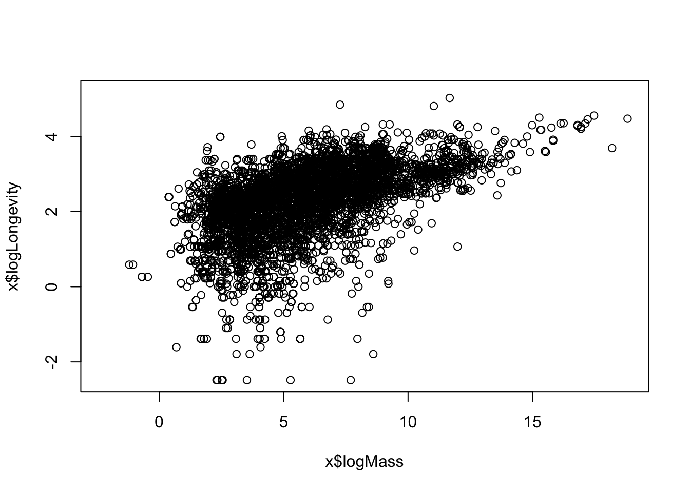
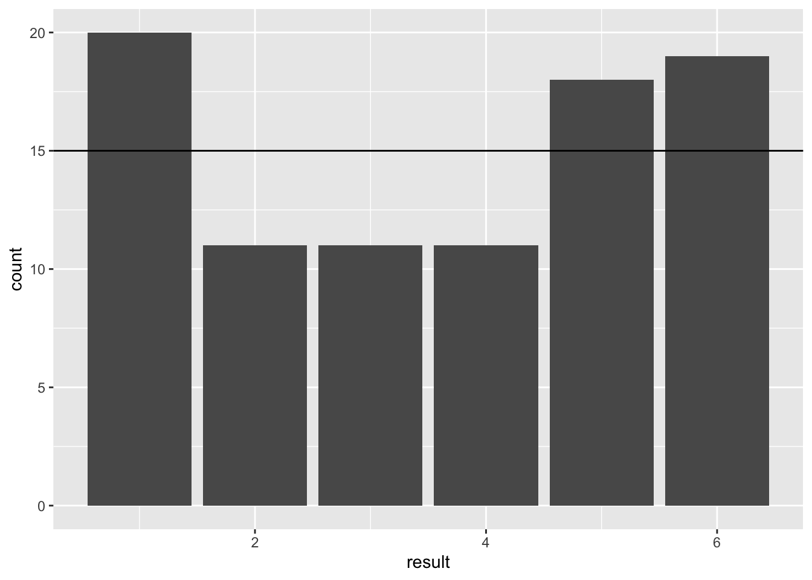

Chapter 18 Extending use cases of GLM
In the previous chapter we used the case of modelling count data, which is bounded at 0 and takes integer values, to understand how Generalised Linear Models work. In this chapter we extend our understanding by looking at another type of data, namely binomial data.
18.1 Binomial response data
There are three types of Binomial data, but all three types have the idea of “success” and “failure” at their heart. It is up to you, the modeller, to decide what these successes and failures are, but they can be any kind of data that can be coerced into two discrete categories. Common examples include pass/fail, survived/died, presence/absence and yes/no.
The three data types are as follows:
- The data can be in the form of a two-level factor - often coded as zeros and ones (0/1 data). For example, this could represent whether an died (0) or survived (1) in a study; or it could represent male (
M) or female (F) in a study trying to predict sex from other variables (e.g. size or morphology). - The data could be expressed as a numeric vector of proportions, bounded between 0 and 1 (i.e. can take any value between 0 and 1). For example these data could be percentages expressed as proportion, such as proportion (or percent) of individuals in a group surviving. In this case, the total number of cases that contributed to the proportion can be optionally included as
weightsin the regression model.13 - Finally, the data could be expressed as numbers in a two column matrix where the first column gives the number of “successes” and the second column gives the number of “failures”.
The aim of the GLM is usually to estimate probability of “success” (e.g. survival, passing, scoring a goal…). Thus, the outcome (the predicted response, or fit, of the model) is a value between 0 and 1 on the natural scale, that can be interpreted as a probability (e.g. of survival, of success, of presence etc.)
The link function used for a binomial GLM is usually the logit transformation, and therefore another name for this type of regression is logistic regression. The logit transformation linearises an S-shaped curve and therefore allows a linear regression line to be fitted from data that follows this pattern. The function is \(y = log(\frac{p}{1-p})\), where \(p\) is the probability or proportion. The inverse logit (the anti-logit) is \(p = \frac{exp(y)}{exp(y)+1}\).

We could linearise the data and then fit an ordinary linear model using lm but (like with the Poisson regression) the other assumption of the ordinary linear model, homoscedasticity, would cause problems. With S-shaped binomial relationships the expected variance is small at the two ends of the range and large in the middle of the range. This contrasts strongly with the constant variance assumption of ordinary linear models. Therefore it is wise to account for this using a Generalised Linear Model that explicitly accounts for this variance structure.
Let’s try a couple of examples.
Remember to load the dplyr, magrittr and ggplot packages, and to set your working directory correctly.
18.2 Example: NFL field goals
In this example you will be dealing with binary data (0/1, failure/success) from the American National Football League (NFL). The data are a record of field goals, which are a relatively rare method of scoring where someone kicks the ball through over the crossbar and through the uprights of the goal during play.
Our aim is to estimate how the probability of success changes with distance from the goal. We already have a good idea that success probability will decline with increasing distance! But at what rate does the probability decline? And at what distance is there a probability of 0.5 (i.e. 50% chance of success)?
First, import the data and convert the distance from yards to meters.
NFL <- read.csv("CourseData/NFLfieldgoal.csv") %>%
mutate(Distance = Distance * 0.9144)Next, plot the data with ggplot (geom_jitter would be a good option, but you might like to adjust the height and alpha arguments. e.g. geom_jitter(height = 0.05,alpha = 0.5)). You can see that the data is distributed in two bands with 1 representing success and 0 representing failure.
(A<-ggplot(NFL,aes(x = Distance,y = Success)) +
geom_jitter(height = 0.05, alpha = 0.5))
Now we can fit a GLM using an appropriate binomial error structure.
nflMod <- glm(Success ~ Distance, data = NFL, family = binomial)As usual, we should look at the model diagnostics. These look pretty bad. One reason that these diagnostics (e.g. the QQ plot) can look bad is when we are missing important variables in the model. In this case, for example, the distribution could look “off” because we don’t include important information on other aspects of the game (e.g. was the team winning or losing at the time? how many minutes until the end of the game? how experienced is the player?). We can be fairly sure that binomial is the most appropriate variance structure because of the nature of the 0/1 data so let’s stick with it for now!
library(ggfortify)
autoplot(nflMod)
We proceed in the normal way by obtaining the ANOVA table for the model. We need to specify that we want to calculated p-values using a “Chi” squared test. This shows us that indeed distance is an important variable in determining probability of success (not so surprising!)
anova(nflMod, test = "Chi")## Analysis of Deviance Table
##
## Model: binomial, link: logit
##
## Response: Success
##
## Terms added sequentially (first to last)
##
##
## Df Deviance Resid. Df Resid. Dev Pr(>Chi)
## NULL 947 955.38
## Distance 1 137.8 946 817.58 < 2.2e-16 ***
## ---
## Signif. codes: 0 '***' 0.001 '**' 0.01 '*' 0.05 '.' 0.1 ' ' 1We get more useful information from the coefficient summary of the model. This gives the intercept and slope of the model on the scale of the linear predictor (see the figure above).
summary(nflMod)##
## Call:
## glm(formula = Success ~ Distance, family = binomial, data = NFL)
##
## Deviance Residuals:
## Min 1Q Median 3Q Max
## -2.6681 0.2704 0.4067 0.7094 1.4708
##
## Coefficients:
## Estimate Std. Error z value Pr(>|z|)
## (Intercept) 5.68958 0.45021 12.64 <2e-16 ***
## Distance -0.13118 0.01263 -10.38 <2e-16 ***
## ---
## Signif. codes: 0 '***' 0.001 '**' 0.01 '*' 0.05 '.' 0.1 ' ' 1
##
## (Dispersion parameter for binomial family taken to be 1)
##
## Null deviance: 955.38 on 947 degrees of freedom
## Residual deviance: 817.58 on 946 degrees of freedom
## AIC: 821.58
##
## Number of Fisher Scoring iterations: 5We could report this something like this:
The binomial GLM showed that distance was significantly associated with the probability of goal success (GLM: Null Deviance = 955.38, Residual Deviance = 817.58, d.f. = 1 and 946 p <0.001). The slope and intercept of the relationship is -0.131 and 5.690 respectively on the logit scale. The equation of the best fit line was therefore logit(nOffspring) = 5.690 - 0.131\(\times\)distance (see Figure XXX)
The equation of the model if you want to express it on the natural scale works out to be:
\(y =\frac{1}{1+exp(-(\beta_0 + \beta_1 x))}\), or \(probability =\frac{1}{1+exp(-(5.690 - 0.131\times distance))}\).
Let’s make sure that works by creating a set of predicted data from this equation and plotting it onto the graph:
d1 <- data.frame(x = 10:50) %>%
mutate(y = 1/(1+exp(-(5.690 - 0.131 *x))))
A +
geom_line(data = d1,aes(x,y),colour="red")
Rather than using the equation, there is an easier way by using the R’s predict function. We will use predict to get the predicted probability of success across the range of distances that we provide as a new data frame that we are here calling newDat. We will also predict the 95% Confidence Interval (CI) for these estimates. We will use these data to add the CI ribbon and line to the plot.
The predict function returns an object that includes the fit and the se.fit which are the predicted value of the regression and the standard error of that predicted value respectively. Thus, if the output of the predict function is stored as pv we can address those parts as pv$fit and pv$se.fit, and we can save these values alongside the data in newDat.
Remember that the model, and the predicted values from it, are expressed on the scale of the linear predictor (i.e. the transformed data scale). It is usually desirable to “backtransform” to the natural scale before plotting. See below.
First we obtain the predictions and CI on the scale of the linear predictor (logit scale). We calculate 95% CI from the standard errors simply by multiplying by 1.96.
#Dataset to predict FROM
newDat <- data.frame(Distance = 14:52)
#Get predictions from the model
pv <- predict(nflMod, newdata = newDat,se.fit = TRUE)
#Add those predictions to newDat
newDat <- newDat %>%
mutate(Success_LP = pv$fit) %>%
mutate(lowerCI_LP = pv$fit - 1.96*pv$se.fit) %>%
mutate(upperCI_LP = pv$fit + 1.96*pv$se.fit)Now we can first obtain the inverse link from the model object family(nflMod)$linkinv, and use that to backtransform the data onto the natural scale ready for plotting.
#Get the inverse link function
inverseFunction <-family(nflMod)$linkinv
#transform predicted data to the natural scale
newDat <- newDat %>%
mutate(Success = inverseFunction(Success_LP),
ymin= inverseFunction(lowerCI_LP),
ymax = inverseFunction(upperCI_LP))Now we can finally plot the model predictions and the 95% confidence intervals for them.
#The plot and ribbon
(A <- ggplot(NFL,aes(x= Distance,y=Success)) +
geom_ribbon(data = newDat,aes(x =Distance,ymin=ymin,ymax=ymax),
fill="grey75",alpha = 0.5)+
geom_smooth(data = newDat,stat="identity")+
geom_jitter(height = 0.05,alpha = 0.5)) So, at what distance does the probability of success fall to just 50%? You could read this directly from the plot as “approximately 44m”. Alternatively, you could obtain the value from the
So, at what distance does the probability of success fall to just 50%? You could read this directly from the plot as “approximately 44m”. Alternatively, you could obtain the value from the newDat dataset you created above with predictions from the model, by filtering it. This confirms the probability of success reaches 0.5 somewhere between 43-44m.
newDat %>%
filter(Success < 0.55) %>%
filter(Success > 0.45) %>%
select(Distance,Success)## Distance Success
## 1 42 0.5449184
## 2 43 0.5122432
## 3 44 0.479463018.3 Example: Sex ratio in turtles
In this example we will look at sex ratio of hawksbill turtles (Eretmochelys imbricata)14. The data are counts of males and females in clutches of eggs incubated at different temperatures.
The sex ratio in the species varies with temperature during incubation. We are interested in what the “tipping point” temperature is between male-female biased ratios.
hawksbill <- read.csv("CourseData/hawksbill.csv")This is a small dataset, you can look at the whole thing:
hawksbill## Temperature Total Nmale Nfemale
## 1 27.9 12 12 0
## 2 28.4 29 29 0
## 3 28.9 31 26 5
## 4 29.3 20 18 2
## 5 29.5 22 14 8
## 6 29.8 10 2 8
## 7 30.4 10 0 10We are interested in sex ratio which we can calculate as the proportion of the population that is female (i.e. number of females divided by total number).
hawksbill <- hawksbill %>%
mutate(propFemale = Nfemale/(Nmale+Nfemale))Let’s plot that data. We can use the trick of telling R to plot the points different sizes depending on the sample size (using the size = argument):
(A<-ggplot(hawksbill,aes(x = Temperature,y = propFemale,size = Total))+
geom_point())
You can see that the proportion of females increases with temperature. Let’s fit a model to these data to better understand them. We could use the propFemale data as the response variable, but there is a big problem with that: we would be giving equal weight to each of the data points, even though the sample size for each one ranges from 10 to 31 This is not good because we would have much more faith in the very large sample sizes than the small ones.
Instead we can bind the data into a two column matrix using cbind. The first column is our “success” and the second column is our “failure”. If we put females in the first column the model will predict “probability of being female”, which is what we want. This two-column approach provides the model with the sample size which it can use to weight the regression appropriately.
y <- cbind(hawksbill$Nfemale,hawksbill$Nmale)Now lets fit the model.
modA <- glm(y ~ Temperature,data=hawksbill,family = binomial)As ever, we should take a quick look at the model diagnostic plots - these look OK.
library(ggfortify)
autoplot(modA)
Now we can look at the anova table. This will tell us what we already know - there is a strong effect of temperature on sex ratio.
anova(modA,test="Chi")## Analysis of Deviance Table
##
## Model: binomial, link: logit
##
## Response: y
##
## Terms added sequentially (first to last)
##
##
## Df Deviance Resid. Df Resid. Dev Pr(>Chi)
## NULL 6 70.353
## Temperature 1 61.869 5 8.484 3.671e-15 ***
## ---
## Signif. codes: 0 '***' 0.001 '**' 0.01 '*' 0.05 '.' 0.1 ' ' 1Now for the coefficients:
summary(modA)##
## Call:
## glm(formula = y ~ Temperature, family = binomial, data = hawksbill)
##
## Deviance Residuals:
## 1 2 3 4 5 6 7
## -0.2010 -0.8013 1.7632 -1.6999 -0.4885 0.8010 0.9607
##
## Coefficients:
## Estimate Std. Error z value Pr(>|z|)
## (Intercept) -111.7200 22.4260 -4.982 6.30e-07 ***
## Temperature 3.7754 0.7625 4.951 7.37e-07 ***
## ---
## Signif. codes: 0 '***' 0.001 '**' 0.01 '*' 0.05 '.' 0.1 ' ' 1
##
## (Dispersion parameter for binomial family taken to be 1)
##
## Null deviance: 70.3528 on 6 degrees of freedom
## Residual deviance: 8.4841 on 5 degrees of freedom
## AIC: 24.184
##
## Number of Fisher Scoring iterations: 5This table gives us the coefficients for the formula of our relationship. We could use these to produce a formula of the form \(y =\frac{1}{1+exp(-(\beta_0 + \beta_1 x))}\).
It is perhaps more useful to plot the model fit onto the plot. First we need to create a data frame to predict from:
newDat <- data.frame(Temperature = seq(27.9,30.4,0.1))Now we can predict the values (and 95% CI) on the scale of the linear predictor (logit).
pv<-predict(modA,newDat,se.fit = TRUE)
newDat <- newDat %>%
mutate(propFemale_LP = pv$fit,
lowerCI_LP = pv$fit - 1.96*pv$se.fit,
upperCI_LP = pv$fit + 1.96*pv$se.fit)Now we can use the inverse link function to backtransform to the natural probability scale.
#Get the inverse link function
inverseFunction <-family(modA)$linkinv
#transform predicted data to the natural scale
newDat <- newDat %>%
mutate(propFemale = inverseFunction(propFemale_LP),
ymin= inverseFunction(lowerCI_LP),
ymax = inverseFunction(upperCI_LP))We can add these values to the plot like this:
#The plot and ribbon
(A<-ggplot(hawksbill,aes(x = Temperature,y = propFemale, size = Total))+
geom_ribbon(data = newDat,aes(x =Temperature,ymin=ymin,ymax=ymax),
fill="grey75",alpha = 0.5,inherit.aes=FALSE)+
geom_smooth(data = newDat,aes(x = Temperature,y=propFemale),stat="identity",inherit.aes=FALSE)+
geom_point())
Can you give read off the graph the approximate estimated temperature at which sex ratio is 50:50?
-
Try refitting the model using simply the proportion female (
propFemale) data rather than the two-column (cbind) approach. - Try writing up the result in the same way as shown for the NFL field goals example.
18.4 Example: Smoking
As I mentioned above binomial regression can be applied to anything where there data can be classified into two groups. I’ll illustrate that now with an example about smoking.
The data set is very small and looks like this:
| Student smokes | Student does not smoke | |
|---|---|---|
| Parent(s) smoke | 816 | 3203 |
| No parents smoke | 188 | 1168 |
The dataset is the number of students smoking and not smoking grouped according to whether their parents smoke. These data are binomial/proportion data because the values in the cells of the table are constrained by the overall total and students must fall into one of the categories. We can use these data to calculate the probability of the student being a smoker.
Before fitting a GLM lets just work out these probabilities by hand. What is the probability that a child of smoking parents is a smoker themselves? This is simply 816/(816+3203) = 0.2030. (i.e. it is the number of smokers divided by the total number). Similarly, the probability that the child of non-smokers smokes is 188/(188+1168) = 0.1386.
But is this a significant difference? That is what we are trying to find out using a GLM.
To do this, we can turn these data into a two column matrix of success (yes - smoker) and failure (no - non-smoker).
y <- cbind("1_yes" = c(816,188),"0_no" = c(3203,1168))
y## 1_yes 0_no
## [1,] 816 3203
## [2,] 188 1168So we can see “success” on the left and “failure” on the right“.
We now create a (tiny) data.frame for the parental status (smoker =”1_yes“, non-smoker =”0_no").
smoke <- data.frame(parentSmoke = c("1_yes","0_no"))Now we can fit the model. Pause now and think about what the NULL hypothesis is here. It is that parental smoking does not have any influence on whether the child smokes, and that the probability that the student smokes is unrelated to parental smoking.
smokeMod <- glm(y~parentSmoke,data = smoke,family=binomial)With such a small dataset, diagnostic plots will not tell us anything useful so there’s no point in doing them for this case.
As usual, we first ask for the (Analysis of Deviance table using anova.
anova(smokeMod,test="Chi")## Analysis of Deviance Table
##
## Model: binomial, link: logit
##
## Response: y
##
## Terms added sequentially (first to last)
##
##
## Df Deviance Resid. Df Resid. Dev Pr(>Chi)
## NULL 1 29.121
## parentSmoke 1 29.121 0 0.000 6.801e-08 ***
## ---
## Signif. codes: 0 '***' 0.001 '**' 0.01 '*' 0.05 '.' 0.1 ' ' 1This tells us that the status of the parents (whether they smoke or not) is highly significant: it explains a lot of the pattern that we see in the data.
We can find out what this pattern is by examining the summary table.
summary(smokeMod)##
## Call:
## glm(formula = y ~ parentSmoke, family = binomial, data = smoke)
##
## Deviance Residuals:
## [1] 0 0
##
## Coefficients:
## Estimate Std. Error z value Pr(>|z|)
## (Intercept) -1.82661 0.07858 -23.244 < 2e-16 ***
## parentSmoke1_yes 0.45918 0.08782 5.228 1.71e-07 ***
## ---
## Signif. codes: 0 '***' 0.001 '**' 0.01 '*' 0.05 '.' 0.1 ' ' 1
##
## (Dispersion parameter for binomial family taken to be 1)
##
## Null deviance: 2.9121e+01 on 1 degrees of freedom
## Residual deviance: -3.7170e-13 on 0 degrees of freedom
## AIC: 19.242
##
## Number of Fisher Scoring iterations: 2This shows us the estimates on the logit scale. We can use predict to get a sense for these predictions on the more intuitive probability scale.
First we calculate the fitted values and 95% confidence intervals on the scale of the linear predictor (logit):
pv<-predict(smokeMod,smoke,se.fit = TRUE)
smoke <- smoke %>%
mutate(prob_LP = pv$fit,
lowerCI_LP = pv$fit - 1.96*pv$se.fit,
upperCI_LP = pv$fit + 1.96*pv$se.fit)Then we can backtransform these values to the probability scale using the inverse link function:
#Get the inverse link function
inverseFunction <-family(smokeMod)$linkinv
#transform predicted data to the natural scale
smoke <- smoke %>%
mutate(prob = inverseFunction(prob_LP),
ymin= inverseFunction(lowerCI_LP),
ymax = inverseFunction(upperCI_LP))
smoke## parentSmoke prob_LP lowerCI_LP upperCI_LP prob ymin ymax
## 1 1_yes -1.367429 -1.444287 -1.290570 0.2030356 0.1908823 0.2157563
## 2 0_no -1.826606 -1.980629 -1.672583 0.1386431 0.1212518 0.1580801This table shows us that the probability of the students smoking is 0.2030 (95% CI = 0.191-0.216) for children of smokers, and 0.139 (95% CI = 0.121-0.158) for children of non-smokers. We can plot this using ggplot like this.
ggplot(smoke,aes(x=parentSmoke,y = prob,ymin = ymin,ymax=ymax))+
geom_point()+
geom_segment(aes(xend = parentSmoke,y = ymin,yend = ymax))